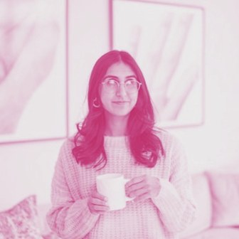
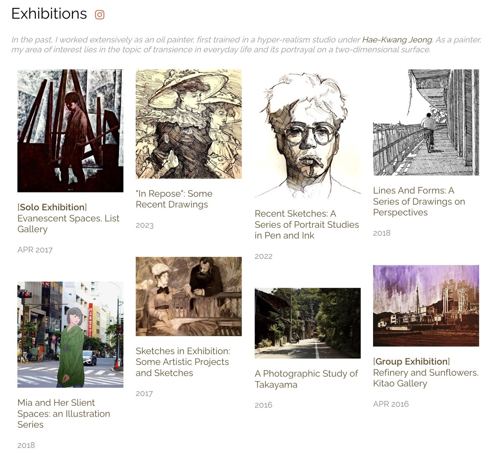
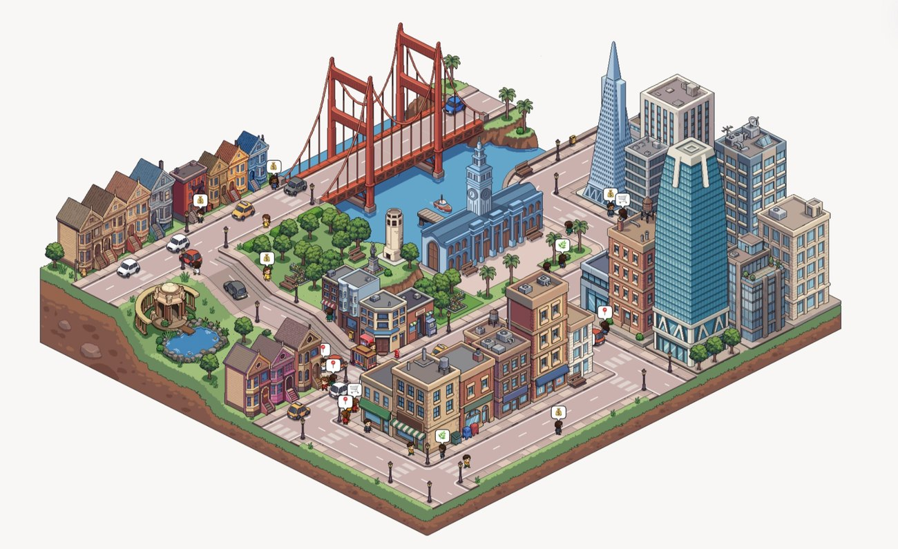
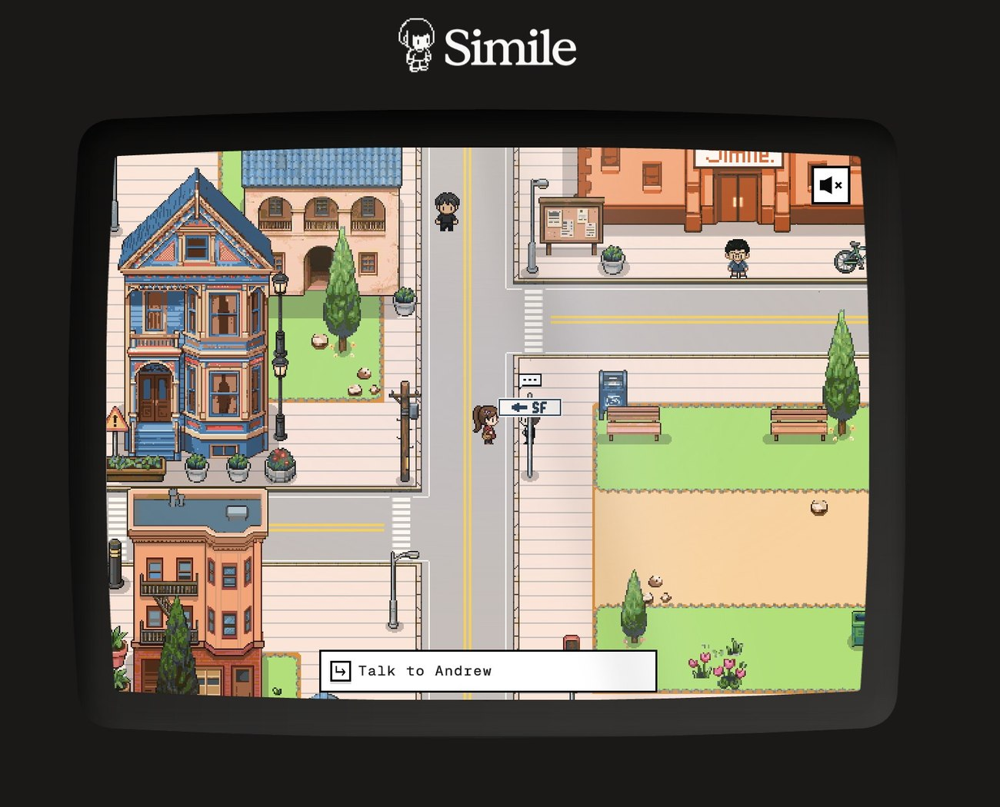
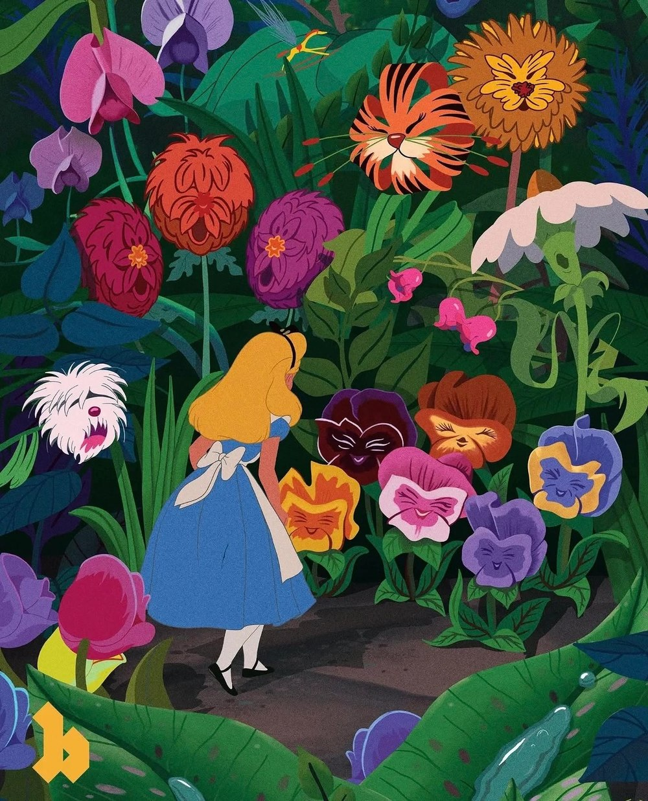

An interview with Mihika Kapoor, Head of Product at Simile
Simulation is human
Recorded September 2026 · Published September 2026
Mihika Kapoor is Head of Product at Simile, the research and product lab simulating human behavior.
Mihika has a habit of noticing something missing, making or co-making it herself, and then getting everyone else to see its magic too. At Princeton, she identified a gap between art and computer science, which became Design Nation, a national conference for design-enthusiast undergrads. At Figma, the Maker Week hackathon became her launch pad where she pitched music in FigJam and Figma Slides. A year ago, she started her own company. Then, a <10 person startup founded by AI researchers and a studio art major that most people had not heard of yet talked her into joining and leading product instead.
Simile grew out of the 2023 Stanford paper on generative agents. Following this, most of the AI field chased making agents more capable than people. Simile, however, took it in a different direction, which is how to replicate humans exactly, with all of their imperfections included so companies can hear from the people their decisions affect. The product is the voice of those humans in rooms they are otherwise not in.
This conversation is about conviction over the safe choice: placing a design emphasis on “show your work” instead of just “simply,” choosing the word “human” for building the brand around - when most people assume simulation means the opposite, and landing on a pixel game town aesthetic despite being an early stage company selling to Fortune 100 buyers.
Did you always consider yourself creative as a kid? And how and when did you discover product design?
My grandma tells this story about how, when I was a baby, the way to get me to stop crying was to walk me over to a painting on the wall. Growing up, it was painting, drawing, chalk on the sidewalks, and every week my mom would drive me into the city for live model classes. In high school I became the design editor for five school publications, which was my introduction to InDesign and Photoshop, and to having an editorial voice.
Product design came somewhat accidentally. I majored in computer science and minored in visual arts at Princeton, and like a good computer science student, I did a software engineering internship at a startup the summer after my freshman year. I entered as a software engineering intern and exited as a product design intern. Before that summer, I had no idea the field existed. I was convinced I had found my life’s calling.
The following summer I interned in product design at Facebook. This was 2016, and design was under the radar but growing in prominence. InVision had just released a film called Design Disruptors, which argued that design was the number one factor shaping the world we lived in. I watched it with my intern class, and it moved design from a thing I was interested in to a thing that underpins society. Then I came back to campus and none of that was reflected in my curriculum. No HCI, no courses on product design. My entire intern class was in the same boat, so I started Design Nation to address that gap.
You also went on to accomplish a lot at Figma - what are you most proud of shipping there personally?
I fully embraced Maker Week, our biannual company-wide hackathon. Some companies run hackathons for just their tech org. At Figma, the entire company stopped what they were doing to create, and I used it as a vehicle to advance whatever I wanted on the roadmap. My first one, I worked on adding music to FigJam, which is not a necessary feature and hard to prioritize normally, but exciting to explore in a hackathon. We ultimately shipped it. Figma Slides, Figma’s third product, started the same way. I pulled a team together, then used demo day to get the entire company to see the magic.
What made you excited to join Simile, and what is the company’s mission?
My journey to Simile was unconventional. Last summer I left Figma to found a company. This past fall I was catching up with Lainie, Simile’s co-founder and GTM lead, pitching her on being a customer for my startup, and her response was yes, but also, you should come lead product at Simile.
At the time, Simile was a sub-10-person startup that pretty much anyone I spoke to, including VCs, had no idea about. I was skeptical. I was decidedly on my founding journey, had great design partners and traction, and was set on that mission. But Lainie said two things: you have to meet our founders - they are incredibly brilliant and low ego, and I know you’re going to love the idea - it’s going to change the world.
So I took a meeting with Joon, Simile’s CEO, and one of the first things I learned is that before he studied computer science and went into research, he majored in studio art. He is this art-and-technical blend of a human being.

Simile’s ultimate ambition is to help people make better decisions by simulating the entire world. People make expensive and terrible decisions all the time because they are unable to properly take into account the humans they are impacting. Simile is a tool to experiment with the future and understand human behavior through simulation.
A lot of people took the original generative agents research in the direction of making agents even more perfect than humans. The Simile team took it in a very different direction, which is how to replicate humans exactly, with all of their imperfections. You can distill pretty much any company into: figure out what to do, then do the thing. Most AI today is pointed at the latter. Simile helps with the former.
Most startups today also fall into one of two buckets. Either you have the wrappers, or you have the new labs that are interesting but years away from commercial viability. Simile was this N of 1 combination of research foundations and crazy commercial pull, so from the very beginning research and product worked in lockstep. The caliber of the team, the vastness of the vision, and the conviction of the customers made it an easy yes for me.
What is most exciting and most challenging about leading product when research and product work in lockstep?
We call Simile a research and product lab because we are experimental on both fronts at once. We are post-training models to build a foundation model of human behavior, and we are deploying those via an interface to our end customers.
That presents a unique design challenge. Traditionally the core principle in design is simplify, simplify, simplify. At Simile you still need to simplify, but there is a strong emphasis on showing your work.
There is a difference between simulation and prediction. Prediction says this is what’s going to happen. Simulation says this is what’s going to happen, and more importantly, these are the levers, steps and inputs informing that end state and how it unfolds. Getting the answer right is a baseline expectation. The most magical moments customers have in our product are when they learn something or see a perspective they had never considered, which then changes their own mental calculus about the decision. So the challenge is how you maintain simplicity while showcasing the inputs to a simulation, so you bring the user along on that journey.

Let’s talk about Simile’s visual language - the game town aesthetic is memorable. What creative decisions have been pivotal to how Simile is perceived?
Leaning into the original game town aesthetic was a high conviction, controversial decision. Our primary audience is F100 companies. When you appeal to an enterprise buyer, you typically want to look official, corporate, trustworthy. A game town is antithetical to all of that. It’s playful, unserious, and not very grown up.
A few principles led us there anyway. We worked with Pentagram on our brand, and early on they had us distill it into a single word. The word I advocated for was human. The biggest misconception about simulation is that you are sidelining humans by spending time with simulations instead. We view our work as the opposite. If you are a company as large as CVS, you cannot get 90 million Americans in a room to understand their needs. Through simulation, we can get close. We see our work as being the voice of these humans in the rooms they are otherwise not in.
Second, very few companies at the seed stage prioritize brand, because it is so easy for it to fall to the bottom of the list. The brands I admire most, Notion, Clay, Ramp, have consistently put it front and center. There is an unquantifiable brand equity you build by leaning into a strong visual identity. When you see a motif without a logo and instantly know the brand - that felt very important to me.
Third, so many people got excited about simulation because they read the original papers. The game town creates continuity from the research that created the field to the work we are doing now to push the frontier.
Finally, everyone has an inner child. Our task has been how to build a world that has that humanness, that child in everyone, and still looks official and trustworthy.
Is investing in brand something a founder either believes in or doesn’t?
Our founders, as a byproduct of having their own creative streaks, are in the believer camp. Joon wrote the original paper with two of his professors, Michael and Percy, who are also co-founders. When Joon had the idea of building the game town, pretty much every professor laughed in his face, except Michael, who said that’s an interesting idea, we should explore it. They never expected it to go as viral as it did. But people are visual creatures.
I also love that our mission is to simulate the entire world and our brand language is building an entire world. There is an Easter egg at the bottom of our website. Scroll down and you end up in a game town with all of the company’s similes in it, and you can walk up and talk to us. Eventually we want that to be the entire world.

As you grow, where are you most excited to build out the team?
We are hiring on all fronts. PMs and designers (though I refer to it as design engineering now because our designs live in code). We are also building an in-house brand function. Until now, our two designers, Natasha and Kian, have been product designers by trade moonlighting as brand designers. They coded the entire website. So now we are hiring brand designers, motion animators, storytellers, pixel artists, you name it. Folks with incredible creativity, ambition and scrappiness.
Why storytelling and not comms?
Comms feels more reactive: we are doing this launch, how do we talk about it. Storytelling is developing the core company narrative and partnering with people across the company to evangelize it.
What has influenced your taste and your philosophy?
No surprises here: art. The artists I love most use excessive color. David Hockney, Matisse. I also love large scale, so the Monet paintings in the Musée de l’Orangerie, which make you feel like a dot. And I love absurdism, so Alice in Wonderland has been very influential.

Other than art, a weird rabbit hole you have gone down recently?
We created a mini-me channel in Slack with similes of all the employees. You throw a bunch of employees into a thread, prompt them with a question, and watch them reason it out. It started jokey - what should we order for lunch, what should we name the Wi-Fi. Now people throw in everyone on a customer account and ask them to develop a strategy. It’s addictive.
Where do you go to get inspired when you are in a rut?
Pen and paper. I think in pen and paper despite being very tech-filled. Even before a prototype, I almost always start there!